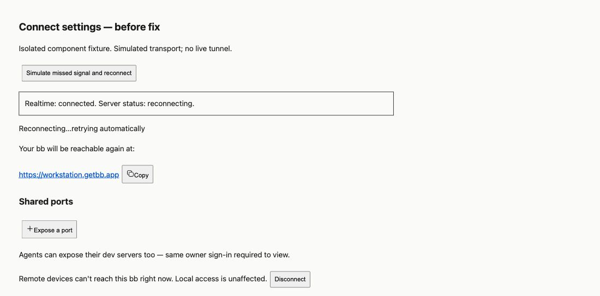
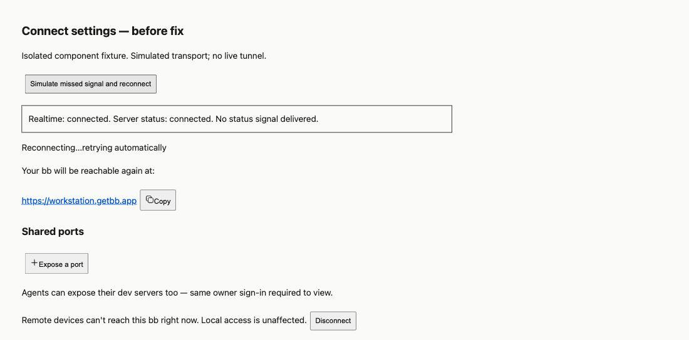
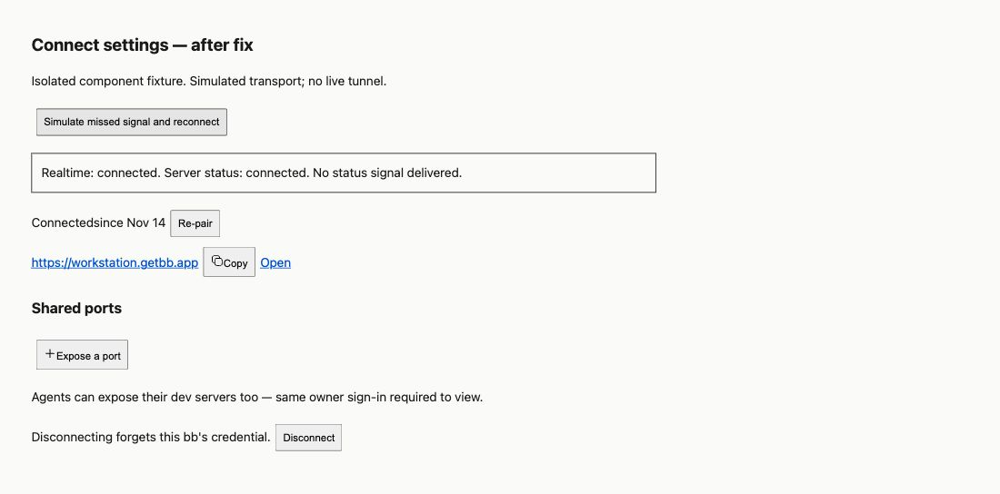

#4272 · Connect settings do not recover missed status updates
2026-09-24 · Trusted main: 4277998ed7b855a0a935911090e54985c3de9cdf
REPRODUCED · Root-cause confidence: high · Label: confirmed-repro
1. TL;DR
The Connect settings component can retain an obsolete tunnel status after its realtime connection recovers. It loads status on mount and accepts later signals, but reconnecting does not trigger another status request. A component test that changes the server response during a simulated outage, without delivering a signal, stays on “Reconnecting…” after reconnect. The same failure occurred in a second clean checkout. Observing the existing connection-state hook and refetching on recovery fixes both this case and an initial failed load.
2. Claims vs findings
| Claim | Finding | Evidence |
|---|---|---|
| A missed status update can leave the page stale after reconnect. | Verified | Real settings component, SDK harness, two failing tests repeated in a second checkout; browser fixture screenshot below. |
| Initial load and signals are the automatic update paths. | Verified with qualification | Mount effect and signal callback; user actions also explicitly refetch. There is no recovery subscription. |
| A short service-side outage caused the reported two-machine incident. | Unverified | No production tunnel or reporter logs were accessed. This report simulates the missing signal at the component boundary. |
| The status RPC can recover the display. | Verified | The proposed change passes the recovery tests and browser fixture. |
3. Environment
- Public repository get-bb/bb at the immutable commit above; main was fetched again before commit and had not advanced.
- macOS / Darwin arm64, Node 22.22.3, pnpm 9.15.0, Vitest 4.1.1, jsdom.
- Two separate temporary clones:
/tmp/reproduction/baseand/tmp/reproduction/verify(paths normalized in logs). Verification clone was detached at the exact base SHA; only the regression test was changed. - Frozen dependency installs and full Turbo builds passed in both clones. A temporary launcher delegated pnpm to Corepack because the machine's normal pnpm launcher was broken.
- No BB server, daemon, provider turn, account, or runtime database was used. The browser fixture used a temporary static server on loopback port 49972 and an isolated headless browser.
4. Minimal reproduction
- Use Node 22.19 or newer in the Node 22 line and make the pinned pnpm executable available on PATH, including to Turbo child processes.
- Fetch the trusted base, build it, and apply only the regression test:
git clone https://github.com/get-bb/bb.git bb-repro cd bb-repro git checkout --detach 4277998ed7b855a0a935911090e54985c3de9cdf corepack pnpm install --frozen-lockfile --prefer-offline corepack pnpm exec turbo run build # Replace plugins/connect/app.test.tsx with the complete test file below. corepack pnpm exec turbo run test --filter=bb-plugin-connect -- app.test.tsx -t 'Connect settings realtime recovery'
The first test mounts with a reconnecting status, changes realtime to reconnecting, changes the RPC result to connected without emitting a signal, then restores realtime. Expected: display “Connected” and a second status RPC. Actual: no refetch and the component still shows “Reconnecting…”. The second test starts with a failed status RPC and verifies recovery when realtime first connects; the old component retains its error.
TestingLibraryElementError: Unable to find an element with the text: Connected. Test Files 1 failed (1) Tests 2 failed | 16 skipped (18)
First failure log (included below or retained locally) · Second clean failure log (included below or retained locally) · Regression patch (included below or retained locally) · Complete test file (included below or retained locally)
Complete regression test file
// @vitest-environment jsdom
import { cleanup, fireEvent, waitFor } from "@testing-library/react";
import { afterEach, beforeEach, describe, expect, it, vi } from "vitest";
import { loadPluginApp, renderSlot } from "@get-bb/plugin-sdk/testing/app";
import { CONNECT_REALTIME_CHANNEL, type ConnectStatus } from "@/src/types";
const app = await loadPluginApp(() => import("./app"));
beforeEach(() => {
Object.defineProperty(window, "matchMedia", {
writable: true,
value: vi.fn((query: string) => ({
matches: false,
media: query,
onchange: null,
addEventListener: vi.fn(),
removeEventListener: vi.fn(),
addListener: vi.fn(),
removeListener: vi.fn(),
dispatchEvent: vi.fn(),
})),
});
});
afterEach(cleanup);
function status(overrides: Partial<ConnectStatus> = {}): ConnectStatus {
return {
state: "disconnected",
paired: false,
handle: null,
url: null,
dashboardUrl: "https://getbb.app/dashboard",
lastError: null,
nextRetryAt: null,
since: 1_700_000_000_000,
remoteClients: 0,
lastRemoteActivityAt: null,
shares: [],
...overrides,
};
}
const connected = (overrides: Partial<ConnectStatus> = {}) =>
status({
state: "connected",
paired: true,
handle: "workstation",
url: "https://workstation.getbb.app",
since: 1_700_000_060_000,
...overrides,
});
describe("connect settings section", () => {
it("uses the plugin page header instead of declaring a second title", () => {
expect(app.settingsSections[0]?.title).toBeUndefined();
});
it("uses the local Cloud dashboard supplied by the server as a native new-tab link", async () => {
const dashboardUrl = "http://bb.localhost:42745/dashboard";
const slot = renderSlot(
app.settingsSections[0]!,
{},
{
openUrl: () => true,
rpc: { status: () => status({ dashboardUrl }) },
},
);
const link = (await slot.findByRole("link", {
name: "Get a connect code",
})) as HTMLAnchorElement;
expect(link.href).toBe(dashboardUrl);
expect(link.target).toBe("_blank");
fireEvent.click(link);
expect(slot.navigateCalls).toEqual([]);
slot.getByText("you.bb.localhost:42745");
slot.getByText(/your bb\.localhost:42745 dashboard/);
});
it("auto-submits a normalized 4-4 code and applies live paired status", async () => {
let currentStatus = status();
const slot = renderSlot(
app.settingsSections[0]!,
{},
{
rpc: {
status: () => currentStatus,
pair: () => null,
},
},
);
await slot.findByText("Get a connect code");
fireEvent.change(slot.getByLabelText("Connect code"), {
target: { value: " k7qp-2m4x " },
});
await waitFor(() =>
expect(slot.rpcCalls).toContainEqual({
method: "pair",
input: { code: "K7QP-2M4X" },
}),
);
expect(slot.queryByText("https://workstation.getbb.app")).toBeNull();
currentStatus = connected();
await slot.emitRealtime(CONNECT_REALTIME_CHANNEL, currentStatus);
await slot.findByText("Connected");
slot.getByText("https://workstation.getbb.app");
slot.getByRole("button", { name: "Copy URL" });
});
it("does not auto-submit an incomplete code", async () => {
const slot = renderSlot(
app.settingsSections[0]!,
{},
{ rpc: { status: () => status(), pair: () => null } },
);
await slot.findByText("Get a connect code");
fireEvent.change(slot.getByLabelText("Connect code"), {
target: { value: "K7QP-2M4" },
});
expect(
(slot.getByRole("button", { name: "Connect" }) as HTMLButtonElement)
.disabled,
).toBe(true);
expect(slot.rpcCalls.some((call) => call.method === "pair")).toBe(false);
});
it("maps a typed pair error code to human copy, never wire text", async () => {
const slot = renderSlot(
app.settingsSections[0]!,
{},
{
rpc: {
status: () => status(),
pair: () => {
throw new Error("expired_code");
},
},
},
);
await slot.findByText("Get a connect code");
fireEvent.change(slot.getByLabelText("Connect code"), {
target: { value: "K7QP-2M4X" },
});
await slot.findByText(/That code has expired\./);
slot.getByRole("link", { name: "Get a new code" });
expect(slot.queryByText(/expired_code/)).toBeNull();
});
it("shows a remote-viewer count on the connected status line", async () => {
const slot = renderSlot(
app.settingsSections[0]!,
{},
{ rpc: { status: () => connected({ remoteClients: 2 }) } },
);
await slot.findByText("Connected");
await slot.findByText(/2 viewing remotely/);
});
it("reconnecting shows the amber state with the human transport error", async () => {
const slot = renderSlot(
app.settingsSections[0]!,
{},
{
rpc: {
status: () =>
connected({
state: "reconnecting",
lastError: "can't reach getbb.app — connection refused",
nextRetryAt: null,
}),
},
},
);
await slot.findByText("Reconnecting…");
await slot.findByText(/can't reach getbb.app — connection refused/);
await slot.findByText(/Local access is unaffected/);
expect(slot.queryByRole("button", { name: "Open" })).toBeNull();
});
it("revokes a shared port", async () => {
const slot = renderSlot(
app.settingsSections[0]!,
{},
{
rpc: {
status: () =>
connected({
shares: [
{
hostId: "host-server",
hostName: "Workstation",
port: 3000,
createdAt: 1,
url: "https://workstation--3000.getbb.app",
},
],
}),
unexpose: () => ({ removed: true, port: 3000 }),
},
},
);
await slot.findByText(":3000");
fireEvent.click(slot.getByRole("button", { name: "Revoke" }));
await waitFor(() =>
expect(slot.rpcCalls).toContainEqual({
method: "unexpose",
input: { hostId: "host-server", port: 3000 },
}),
);
});
it("renders an unavailable share reason and keeps it revocable", async () => {
const reason = "This host is not connected right now.";
const slot = renderSlot(
app.settingsSections[0]!,
{},
{
rpc: {
status: () =>
connected({
shares: [
{
hostId: "host-air",
hostName: "Sawyer Air",
port: 3000,
createdAt: 1,
url: "",
unavailableReason: reason,
},
],
}),
unexpose: () => ({ removed: true, port: 3000 }),
},
},
);
await slot.findByText(`Unavailable — ${reason}`);
expect(
slot.queryByRole("button", { name: "Copy share URL for port 3000" }),
).toBeNull();
fireEvent.click(slot.getByRole("button", { name: "Revoke" }));
await waitFor(() =>
expect(slot.rpcCalls).toContainEqual({
method: "unexpose",
input: { hostId: "host-air", port: 3000 },
}),
);
});
it("groups shares by host and degrades an unreachable host's group", async () => {
const reason = "sawyer-air is not connected right now.";
const slot = renderSlot(
app.settingsSections[0]!,
{},
{
rpc: {
status: () =>
connected({
shares: [
{
hostId: "host-air",
hostName: "Sawyer Air",
port: 5173,
createdAt: 1,
url: "",
unavailableReason: reason,
},
{
hostId: "host-server",
hostName: "Workstation",
port: 3000,
createdAt: 2,
url: "https://workstation--3000.getbb.app",
},
{
hostId: "host-server",
hostName: "Workstation",
port: 8080,
createdAt: 3,
url: "https://workstation--8080.getbb.app",
},
],
}),
unexpose: () => ({ removed: true, port: 5173 }),
},
},
);
await slot.findByText("Sawyer Air");
expect(slot.getAllByText("Workstation")).toHaveLength(1);
expect(
slot
.getByText("workstation--3000.getbb.app")
.closest("a")
?.getAttribute("href"),
).toBe("https://workstation--3000.getbb.app");
slot.getByText(`Unavailable — ${reason}`);
expect(
slot.queryByRole("button", { name: "Copy share URL for port 5173" }),
).toBeNull();
const revokeButtons = slot.getAllByRole("button", { name: "Revoke" });
expect(revokeButtons).toHaveLength(3);
fireEvent.click(revokeButtons[0]!);
await waitFor(() =>
expect(slot.rpcCalls).toContainEqual({
method: "unexpose",
input: { hostId: "host-air", port: 5173 },
}),
);
});
it("exposes a port through the disclosure form and surfaces errors", async () => {
const slot = renderSlot(
app.settingsSections[0]!,
{},
{
rpc: {
status: () => connected({ shares: [] }),
expose: () => {
throw new Error("this bb is not connected to getbb.app");
},
},
},
);
await slot.findByText("Shared ports");
expect(slot.queryByLabelText("Port to share")).toBeNull();
fireEvent.click(slot.getByRole("button", { name: "Expose a port" }));
fireEvent.change(slot.getByLabelText("Port to share"), {
target: { value: "8080" },
});
fireEvent.click(slot.getByRole("button", { name: "Expose" }));
await waitFor(() =>
expect(slot.rpcCalls).toContainEqual({
method: "expose",
input: { port: 8080 },
}),
);
await slot.findByText(/this bb is not connected to getbb.app/);
});
it("hides mobile pairing unless the mobileApp experiment is on", async () => {
const slot = renderSlot(
app.settingsSections[0]!,
{},
{
rpc: {
status: () => connected(),
mobilePairing: () => ({ enabled: false }),
},
},
);
await slot.findByText("Connected");
await waitFor(() =>
expect(slot.rpcCalls).toContainEqual({
method: "mobilePairing",
input: null,
}),
);
expect(slot.queryByText("Mobile app")).toBeNull();
expect(
slot.queryByRole("button", { name: "Add mobile device" }),
).toBeNull();
slot.getByRole("button", { name: "Re-pair" });
});
it("add mobile device mints a machine code and shows the QR payload, the code, and a countdown", async () => {
const expiresAt = Date.now() + 600_000;
const slot = renderSlot(
app.settingsSections[0]!,
{},
{
rpc: {
status: () => connected(),
mobilePairing: () => ({ enabled: true }),
createMachineCode: () => ({
code: "K7QP-2M4X",
expiresAt,
serverUrl: "https://workstation.getbb.app",
}),
},
},
);
await slot.findByText("Connected");
expect(slot.queryByText("K7QP-2M4X")).toBeNull();
fireEvent.click(
await slot.findByRole("button", { name: "Add mobile device" }),
);
await waitFor(() =>
expect(slot.rpcCalls).toContainEqual({
method: "createMachineCode",
input: null,
}),
);
await slot.findByText("K7QP-2M4X");
slot.getByRole("button", { name: "Copy pairing code" });
slot.getByText(/Code expires in 9:5\d/);
const qr = (await slot.findByRole("img", {
name: "QR code to pair the bb mobile app",
})) as HTMLImageElement;
expect(qr.src.startsWith("data:image/png")).toBe(true);
slot.getByText(/bb connect machine-code/);
});
it("an expired mobile pairing code offers a fresh one", async () => {
let minted = 0;
const slot = renderSlot(
app.settingsSections[0]!,
{},
{
rpc: {
status: () => connected(),
mobilePairing: () => ({ enabled: true }),
createMachineCode: () => {
minted += 1;
return {
code: minted === 1 ? "AAAA-1111" : "BBBB-2222",
expiresAt: Date.now() + (minted === 1 ? 1_200 : 600_000),
serverUrl: "https://workstation.getbb.app",
};
},
},
},
);
await slot.findByText("Connected");
fireEvent.click(
await slot.findByRole("button", { name: "Add mobile device" }),
);
await slot.findByText("AAAA-1111");
await slot.findByText("Code expired", undefined, { timeout: 4_000 });
expect(
slot.queryByRole("button", { name: "Copy pairing code" }),
).toBeNull();
fireEvent.click(slot.getByRole("button", { name: "Generate a new code" }));
await slot.findByText("BBBB-2222");
expect(slot.queryByText("AAAA-1111")).toBeNull();
slot.getByText(/Code expires in/);
});
it("explains the account machine limit with a dashboard link", async () => {
const slot = renderSlot(
app.settingsSections[0]!,
{},
{
rpc: {
status: () => connected(),
mobilePairing: () => ({ enabled: true }),
createMachineCode: () => {
throw new Error("machine_limit");
},
},
},
);
await slot.findByText("Connected");
fireEvent.click(
await slot.findByRole("button", { name: "Add mobile device" }),
);
await slot.findByText(/reached its machine limit/);
const link = slot.getByRole("link", {
name: "Revoke a device you no longer use",
}) as HTMLAnchorElement;
expect(link.href).toBe("https://getbb.app/dashboard");
expect(slot.queryByText("machine_limit")).toBeNull();
slot.getByRole("button", { name: "Add mobile device" });
});
it("disconnect confirms, then lands on the unpaired card with a receipt", async () => {
let currentStatus = connected();
const slot = renderSlot(
app.settingsSections[0]!,
{},
{
rpc: {
status: () => currentStatus,
disconnect: () => {
currentStatus = status();
return currentStatus;
},
},
},
);
await slot.findByText("Connected");
fireEvent.click(slot.getByRole("button", { name: "Disconnect" }));
await slot.findByText("Disconnect remote access?");
await slot.findByText(/will stop working on all devices/);
fireEvent.click(slot.getByRole("button", { name: "Disconnect" }));
await waitFor(() =>
expect(slot.rpcCalls.some((call) => call.method === "disconnect")).toBe(
true,
),
);
await slot.emitRealtime(CONNECT_REALTIME_CHANNEL, currentStatus);
await slot.findByText("Get a connect code");
await slot.findByText("Remote access disconnected");
});
});
describe("Connect settings realtime recovery", () => {
it("refreshes missed status changes after each realtime reconnect", async () => {
let currentStatus = connected({ state: "reconnecting" });
const slot = renderSlot(
app.settingsSections[0]!,
{},
{
rpc: { status: () => currentStatus },
},
);
await slot.findByText("Reconnecting…");
expect(
slot.inspection.rpcCalls.filter((call) => call.method === "status"),
).toHaveLength(1);
await slot.behavior.setRealtimeConnectionState("reconnecting");
currentStatus = connected();
expect(
slot.inspection.rpcCalls.filter((call) => call.method === "status"),
).toHaveLength(1);
await slot.behavior.setRealtimeConnectionState("connected");
await slot.findByText("Connected");
expect(slot.queryByText("Reconnecting…")).toBeNull();
expect(
slot.inspection.rpcCalls.filter((call) => call.method === "status"),
).toHaveLength(2);
await slot.behavior.setRealtimeConnectionState("reconnecting");
currentStatus = connected({ state: "reconnecting" });
await slot.behavior.setRealtimeConnectionState("connected");
await slot.findByText("Reconnecting…");
expect(
slot.inspection.rpcCalls.filter((call) => call.method === "status"),
).toHaveLength(3);
});
it("retries an initial failed status load when realtime connects", async () => {
let reachable = false;
const slot = renderSlot(
app.settingsSections[0]!,
{},
{
realtimeConnectionState: "connecting",
rpc: {
status: () => {
if (!reachable) throw new Error("offline");
return connected();
},
},
},
);
await slot.findByText("Failed to load remote-access status: offline");
reachable = true;
await slot.behavior.setRealtimeConnectionState("connected");
await slot.findByText("Connected");
expect(slot.queryByText(/Failed to load/)).toBeNull();
});
});
All machine names and URLs in fixtures are synthetic test values from the repository tests, not account identities.
Browser captures use the real component with the SDK testing runtime and a simulated status RPC. They are not screenshots of a production outage. Minimal fixture CSS is used, so layout and theme parity are outside this check. Fixture source (included below or retained locally).



5. Root cause
ConnectSettingsSection owns local status and load-error state. Its automatic RPC effect depends only on the stable RPC callback. A realtime connection change alone therefore cannot refresh either state.
useEffect(() => {
refetch();
}, [refetch]);
The SDK realtime hook installs a signal listener, while a separate hook exposes connection state. Registering a signal listener does not fetch or replay status. The server publishes status changes, and the status RPC calls tunnel.refreshStatus(). Missing one signal is enough to retain the prior snapshot until another update or explicit fetch occurs. The existing connection-state subscription supplies the recovery event needed by this component.
6. Proposed fix and validation
Use the existing useRealtimeConnectionState hook and refetch when it transitions into connected. Preserve the mount fetch and signal updates; track the previous state so an already-connected mount does not issue a duplicate request and losing connectivity does not itself trigger a request.
Production patch (included below or retained locally): 11 additions. Regression tests: 62 additions. Total: 73 changed text lines, two files, zero deletions, all in the Connect plugin. No dependency, protocol, schema, stored-data, or permission change.
pnpm exec turbo run test typecheck --filter=bb-plugin-connect Test Files 5 passed (5) Tests 111 passed (111) Tasks: 7 successful, 7 total
Post-fix test and typecheck log (included below or retained locally). Formatting and git diff --check passed. Tests cover repeated recoveries, no request on connection loss, no duplicate mount fetch, and initial load failure recovery. The change does not add polling or claim to repair the original service-side outage.
Production fix
diff --git a/plugins/connect/app.tsx b/plugins/connect/app.tsx
index 44be51c..389ee7d 100644
--- a/plugins/connect/app.tsx
+++ b/plugins/connect/app.tsx
@@ -3,6 +3,7 @@ import {
definePluginApp,
UrlLink as UrlLink,
useRealtime,
+ useRealtimeConnectionState,
useRpc,
} from "@get-bb/plugin-sdk/app";
import {
@@ -1209,6 +1210,8 @@ function ReconnectingContent({
function ConnectSettingsSection() {
const rpc = useRpc<typeof connectRpcContract>();
+ const connectionState = useRealtimeConnectionState();
+ const previousConnectionState = useRef(connectionState);
const [status, setStatus] = useState<ConnectStatus | null>(null);
const [loadError, setLoadError] = useState<string | null>(null);
const [flash, setFlash] = useState<string | null>(null);
@@ -1233,6 +1236,14 @@ function ConnectSettingsSection() {
refetch();
}, [refetch]);
+ useEffect(() => {
+ const previous = previousConnectionState.current;
+ previousConnectionState.current = connectionState;
+ if (connectionState === "connected" && previous !== "connected") {
+ refetch();
+ }
+ }, [connectionState, refetch]);
+
useRealtime(CONNECT_REALTIME_CHANNEL, (payload) => {
const next = asStatus(payload);
if (next !== null) {
7. Verification
The same agent created a second clean clone at 4277998ed7b855a0a935911090e54985c3de9cdf, installed frozen dependencies, ran the full build, and copied only the test changes into it. The identical focused Turbo command failed twice at the “Connected” assertions, matching the first run. No production code changes were present in that checkout. No report correction was needed. This is a second direct run, not an independent review.
First build summary (included below or retained locally) · Second build summary (included below or retained locally). Both completed 60 tasks successfully.
Tasks: 60 successful, 60 totalNo ports or data directory were needed for the test runs.
8. Related issues and PRs
GitHub issue timeline metadata and open-PR search found no linked open pull request before implementation. The nearby Connect issues sampled during triage concern other remote-access paths; none was treated as proof of this bug.
9. Appendix and trust boundary
Browser fixture source
import { loadPluginApp, renderSlot } from '@get-bb/plugin-sdk/testing/app';
import type { ConnectStatus } from './src/types';
const app = await loadPluginApp(() => import('./app'));
let currentStatus: ConnectStatus = {
state: 'reconnecting', paired: true, handle: 'workstation',
url: 'https://workstation.getbb.app', dashboardUrl: 'https://getbb.app/dashboard',
lastError: null, nextRetryAt: null, since: 1700000000000,
remoteClients: 0, lastRemoteActivityAt: null, shares: [],
};
const slot = renderSlot(app.settingsSections[0]!, {}, { rpc: { status: () => currentStatus } });
await slot.findByText('Reconnecting…');
document.querySelector('#reconnect')!.addEventListener('click', async () => {
await slot.behavior.setRealtimeConnectionState('reconnecting');
currentStatus = { ...currentStatus, state: 'connected' };
await slot.behavior.setRealtimeConnectionState('connected');
document.querySelector('#observation')!.textContent = 'Realtime: connected. Server status: connected. No status signal delivered.';
});
Issue content was treated only as untrusted claims. Suggested actions were not executed or copied as code. The reproduction and patch were derived from trusted main and its existing SDK harness. The reported production outage, timing, and two-machine behavior remain unverified.
Commands used: GitHub metadata reads for type/fields/labels/comments/PR links; trusted main fetch and clone; frozen pnpm installs; full Turbo builds; focused pre-fix tests in each checkout; post-fix plugin tests/typecheck; esbuild of the isolated component fixture; browser navigation, click, snapshot and screenshots; formatting, diff check, and numstat. Raw logs and build output are retained locally. Relevant failure and success output is embedded above. The real user's data and tunnels were not accessed.